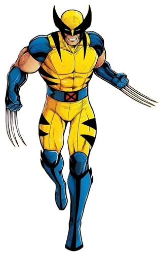

วูล์ฟเวอรีน (Wolverine) หรือมีชื่อจริงว่า เจมส์ ฮาวเล็ตต์ (James Howlett) และเป็นที่รู้จักในชื่อ โลแกน (Logan) เป็นมนุษย์กลายพันธุ์ที่มีพลังในการฟื้นฟูร่างกายอย่างรวดเร็ว ประสาทสัมผัสเหมือนสัตว์ และมีกรงเล็บกระดูกที่หดเข้าออกได้ ก่อนจะถูกนำไปทดลองเคลือบโครงกระดูกด้วยโลหะอะดาแมนเทียมในโครงการ Weapon X